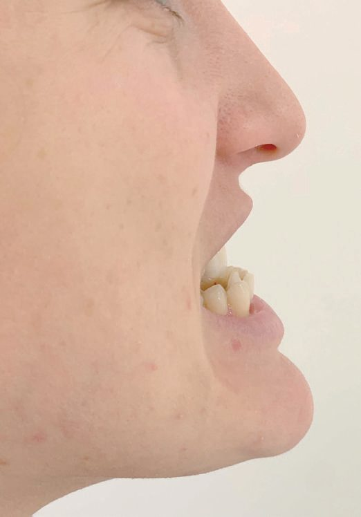
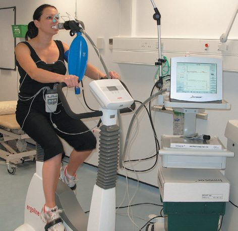
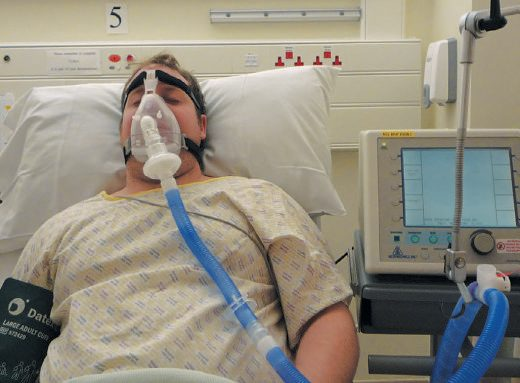

Preoperative Assessment
Summary
- Preoperative assessment is the systematic process of history-taking, examination, investigation and risk stratification carried out before surgery to identify comorbidity, optimise the patient's condition, and match the planned operation and anaesthetic to the patient's physiological reserve [1].
- The stress of major surgery can increase oxygen demand by up to 40%, with inflammatory, endocrine, hypercoagulable and fluid-shift changes persisting for several postoperative days; careful preoperative planning aims to minimise these unwanted effects [1].
- A structured, systems-based evaluation (covering surgical objectives, urgency, risk assessment and informed consent) is now considered central to modern perioperative surgical practice [2].
Definition
Preoperative assessment is defined by its purpose: systematic history, examination and investigation to assess functional reserve and to formulate advice on optimisation so the patient can best cope with anticipated operative stress, ideally through a multidisciplinary team including the primary care physician, specialist nurses, physiotherapist, dietician and perioperative physician [1]. It encompasses determination of surgical objectives (disease prevention, disease control, or symptom palliation), classification of urgency (elective, urgent, or emergent), and risk assessment prior to obtaining informed consent [2].
Physiological demand of surgery
- Surgery and anaesthesia impose a physiological demand for increased oxygen delivery: postoperative oxygen demand rises from an average of 110 mL/min/m² at rest to 170 mL/min/m² [1].
- Most patients meet this by increasing cardiac output and tissue oxygen extraction, but patients with limited cardiorespiratory reserve are at risk of oxygen debt; occult hypovolaemia from fluid shift or blood loss can further impair oxygen delivery, and splanchnic vasoconstriction to compensate for this may cause gut ischaemia, while patients with coronary or cerebrovascular disease face a higher risk of myocardial ischaemia or stroke [1].
- Tissue destruction, blood loss, fluid shifts, temperature change, pain and anxiety all contribute to this demand [1].
Assessment components
- Preoperative assessment is organised around a thorough past medical, surgical and anaesthetic history (including recreational drug/alcohol use, drug history and allergies), examination, and targeted investigation [1].
- Key domains assessed on history include cardiovascular disease (valvular disease, ischaemic heart disease, hypertension, heart failure, dysrhythmia, peripheral vascular disease, cardiac devices), respiratory disease (COPD, asthma, infections, obstructive sleep apnoea), gastrointestinal/liver disease, genitourinary/renal disease, neurological and psychiatric disease, endocrine/metabolic disease (diabetes, thyroid, phaeochromocytoma), locomotor disease, haematological disease (bleeding disorders, thrombosis history), active infection, and previous surgical/anaesthetic problems such as a difficult airway or suxamethonium apnoea [1].
- Examination should be at minimum cardiorespiratory with airway assessment, looking for signs of heart failure, valvular disease, peripheral vascular disease and respiratory disease [1].
- Airway assessment uses the modified Mallampati class, mouth opening >3 cm, thyromental distance >6.5 cm, thyrosternal distance >12.5 cm, jaw protrusion and atlanto-occipital extension [1].
- In the geriatric population, additional clinical domains include cognitive impairment/delirium risk, depression, medication management/polypharmacy, and functional status and frailty [2].
Sources of risk
- Risk of perioperative morbidity and mortality arises from an interaction of patient factors and surgery-specific factors [1].
- Patient factors that predispose to high risk include previous severe cardiorespiratory illness (MI, COPD, stroke), late-stage aortic vascular disease, age over 70 with limited organ reserve, extensive cancer surgery, acute abdominal catastrophe with haemodynamic instability, massive blood loss (>8 units), septicaemia, respiratory failure and acute renal failure [1].
- Surgery-specific risk is stratified into high (>5% cardiac risk: open aortic, major vascular, urgent body-cavity, major neurosurgery), intermediate (1–5%: elective abdominal, carotid, endovascular aneurysm repair) and low risk (<1%: breast, dental, thyroid, ophthalmic) procedures [1].
- The elderly are not independently at higher risk but have more cardiac, pulmonary and renal disease and require surgery four times as often as the rest of the population; around 10% of over-65s are frail [1].
Investigations
- National guidance sets out the investigations needed according to the category of elective surgery and the ASA grade, and the UK version of that grid is set out below [1].
- Commonly used preoperative tests include full blood count (major operations, elderly, anaemia), HbA1c (diabetics not tested in the last 3 months), sickle cell test (if indicated by history), urea and electrolytes (major operations, age >65, cardiovascular/renal/endocrine disease), liver function tests (jaundice, known/suspected hepatitis, malignancy, alcohol excess), clotting screen (bleeding diathesis, liver disease, anticoagulant use), ECG (age >65 or symptomatic with relevant history), chest radiograph (only if clinically indicated), echocardiogram (symptomatic murmurs or heart failure signs), pregnancy testing, and other tests including venous bicarbonate/sleep studies for suspected obstructive sleep apnoea, arterial blood gases, group and save/cross-match, MRSA and cardiopulmonary exercise testing for high-risk surgery [1].
- Airway difficulty prediction uses the modified Mallampati classification (Grade 1: fauces, pillars, soft palate and uvula seen; Grade 4: hard palate only seen) [1].
- Functional physical fitness can be estimated using metabolic equivalent tasks (METs; 1 MET = 3.5 mL O2/kg/min); patients able to achieve >4 METs (e.g. climbing one flight of stairs) are generally accepted for low-risk surgery, though this subjective assessment may be overestimated by patients; the Duke Activity Status Index (DASI) is a less subjective alternative [1].
- Cardiopulmonary exercise testing (CPET) is the gold-standard objective fitness measurement for high-risk surgery, identifying the anaerobic threshold (AT) and peak oxygen consumption (VO2 peak); an AT below 11 mL/kg/min or VO2 peak below 15 mL/kg/min predicts higher morbidity/mortality after major surgery.
- Where CPET is unavailable, the incremental shuttle walk test (ISWT) is a lower-cost alternative; failure to achieve 350 metres predicts higher risk for oesophageal surgery [1].
- In geriatric patients, cognitive assessment can use the Mini-Cog (three-item recall and clock draw, taking about 3 minutes), and depression screening uses the Patient Health Questionnaire-2 (PHQ-2) [2].
- Frailty can be measured using the Timed Up & Go (TUG) test, timing a patient rising from a chair, walking 3 metres, turning and returning to sit; TUG >20 seconds is associated with a 50% risk of major complications in patients over 70 undergoing elective solid-malignancy surgery, versus 14% with TUG ≤20 seconds [2].


Scoring and Severity
- The American Society of Anesthesiologists (ASA) physical status classification is the most widely used categorical risk tool: ASA I (normal healthy patient), II (mild systemic disease, no functional limitation), III (severe systemic disease, definite functional limitation), IV (severe systemic disease, constant threat to life), V (moribund, unlikely to survive 24 hours with or without operation), VI (declared brain-dead organ donor), with "E" appended for emergency operations; 30-day mortality rises from 0.1% (ASA I) to 93.3% (ASA V) [1].
- The ASA classification was not designed as a risk-prediction tool and does not account for age or type of surgery, and the term "systemic disease" introduces subjectivity [1].
- Lee's Revised Cardiac Risk Index (RCRI) uses ischaemic heart disease, heart failure, cerebrovascular disease, diabetes mellitus, renal insufficiency (creatinine >177 µmol/L) and high-risk surgery as weighted risk factors, stratifying risk of major cardiac complications from 0.4% (0 factors) to 11.0% (≥3 factors) [1].
- Other scoring systems include POSSUM/P-POSSUM (Physiologic and Operative Severity Score for the enUmeration of Mortality and morbidity), the ACS NSQIP surgical risk score/calculator (estimates complication/death risk for >1000 procedures using 19–20 patient-specific preoperative factors and CPT-coded procedure risk, publicly available online, with c-statistics >0.75 for most outcomes and >0.9 for 30-day mortality), APACHE-II, Glasgow aneurysm score, Hardman index, Surgical Outcome Risk Tool (SORT), Boey score, Mannheim peritonitis index and the NELA score [1][2].
- The Royal College of Surgeons of England recommends active consultant input for patients with predicted mortality >5%, and direct consultant supervision plus postoperative critical care for those with predicted mortality >10% [1].
- The European Society of Cardiology/Anaesthesiology stratifies surgery into low (<1%), intermediate (1–5%) and high (>5%) 30-day cardiac event risk categories [2].
- Additional general risk-scoring systems referenced across the surgical literature include EuroSCORE (cardiac surgery) and the Glasgow/Ranson criteria for pancreatitis-specific mortality prediction [3].
- Child's classification (Child–Turcotte) grades hepatic dysfunction risk as A (minimal), B (moderate) or C (advanced/high mortality) using serum bilirubin, albumin, ascites, encephalopathy and nutrition [3].
Treatment and Management
- Common comorbidities are optimised to the best possible level before elective surgery.
- Cardiovascular: patients on beta-blockers/statins should continue these perioperatively; ACE inhibitors/receptor blockers are often omitted 24 hours before surgery to prevent intraoperative hypotension; elective surgery is postponed 3–6 months after myocardial infarction; blood pressure should be controlled to <160/100 mmHg preoperatively (Bailey & Love) or delayed if >180 mmHg (Oxford Handbook) prior to elective surgery; warfarin is stopped 5 days preoperatively for an INR ≤1.5, and direct oral anticoagulants generally stopped 2–3 days preoperatively with longer intervals in renal impairment [1][4].
- Respiratory: patients continue regular inhalers until anaesthesia induction, smoking cessation is encouraged (ideally ≥6 weeks preoperatively, minimum 7 days), and preoperative inspiratory muscle training and chest physiotherapy reduce pulmonary complications; regional techniques are considered in severe disease [1][5].
- Gastrointestinal: standard fasting is 6 hours for solids/non-clear fluids, 2 hours for clear fluids, and 4 hours for breast milk in infants [1].
- Renal: chronic renal failure patients should avoid hypovolaemia/nephrotoxic drugs, and dialysis-dependent patients are dialysed the day before surgery with FBC/U&Es checked pre- and post-dialysis [1][3].
- Hepatic: elective surgery is postponed until acute decompensation resolves; vitamin K may be given for coagulopathy of cholestatic jaundice [3].
- Endocrine: HbA1c <69 mmol/mol is recommended before elective surgery; diabetic patients are placed first on operating lists, and variable-rate intravenous insulin infusion is used for insulin-dependent patients undergoing major surgery [1]; a stepwise regimen for minor/major/emergency surgery is detailed with specific sliding-scale insulin doses by blood sugar range [3].
- Steroid-dependent patients (>5 mg prednisolone for >2 weeks, or reduced within 2–4 weeks, or post-adrenalectomy) require perioperative hydrocortisone cover (25–100 mg four times daily, or infusion) to prevent Addisonian crisis [3].
- Obesity: morbidly obese patients (BMI >35) should be counselled on weight loss/exercise, with prophylaxis for aspiration and DVT if surgery cannot be delayed; severe obstructive sleep apnoea requires 6 weeks of preoperative nocturnal CPAP [1].
- Thromboprophylaxis: DVT risk assessment is performed on all patients preoperatively, and oestrogen-containing contraceptives/HRT should be considered for discontinuation 4 weeks before surgery [1].
- High-risk patients (predicted mortality ≥5%) should be admitted to critical care where indicated [1].
- Informed consent, covering diagnosis, proposed procedure, procedure-related risks, likelihood of success, mental capacity and alternatives, is a mandatory, integral part of preoperative management [2].
- For emergency surgery, the same principles of assessment apply but optimisation is time-limited; urgency is graded (e.g.
- NCEPOD classification: immediate, urgent, expedited, elective) and medical treatment should be started even if it cannot be completed before a time-critical operation [1].

NG45 is the guideline that abolished the routine preoperative panel in the UK, and it is best learned as a grid of three surgery grades against three ASA bands. The tests it covers are chest X-ray, resting echocardiography, resting ECG, full blood count, HbA1c, haemostasis tests, kidney function, lung function and arterial blood gases, polysomnography, pregnancy testing, sickle cell tests and urine tests, developed against five comorbidities: cardiovascular, diabetes, obesity, renal and respiratory [6].
Surgery grade is defined by worked examples rather than by definition: minor (excising a skin lesion, draining a breast abscess), intermediate (primary inguinal hernia repair, varicose vein excision, tonsillectomy, knee arthroscopy), and major or complex (total abdominal hysterectomy, endoscopic resection of prostate, lumbar discectomy, thyroidectomy, total joint replacement, lung operations) [6]. ASA is quoted verbatim, with a UK gloss NICE flags as an interpretation rather than an endorsement: anaesthetists in the UK often qualify these grades as relating to functional capacity, that is comorbidity that does not (ASA 2) or does (ASA 3) limit a person's activity [6].
| Test | Minor | Intermediate | Major or complex |
|---|---|---|---|
| Full blood count | Not routinely at any ASA | Not routinely ASA 1 to 2; consider ASA 3 to 4 with cardiovascular or renal disease if symptoms not recently investigated | Yes at every ASA grade |
| Kidney function | Not routinely ASA 1 to 2; consider ASA 3 to 4 if at risk of AKI | Not routinely ASA 1; consider ASA 2 if at risk of AKI; Yes ASA 3 to 4 | Consider ASA 1 if at risk of AKI; Yes ASA 2 to 4 |
| ECG | Not routinely ASA 1 to 2; consider ASA 3 to 4 if no ECG in past 12 months | Not routinely ASA 1; consider ASA 2 with cardiovascular, renal or diabetes comorbidity; Yes ASA 3 to 4 | Consider ASA 1 if aged over 65 and no ECG in past 12 months; Yes ASA 2 to 4 |
| Haemostasis | Not routinely at any ASA | Not routinely ASA 1 to 2; consider ASA 3 to 4 in chronic liver disease | Not routinely ASA 1 to 2; consider ASA 3 to 4 in chronic liver disease |
| Lung function / ABG | Not routinely at any ASA | Not routinely ASA 1 to 2; seek senior anaesthetic advice for ASA 3 to 4 due to respiratory disease | Not routinely ASA 1 to 2; seek senior anaesthetic advice for ASA 3 to 4 due to respiratory disease |
Table reformats NG45 Tables 1 to 3 [6]. Two footnotes travel with the haemostasis row: if anticoagulants need modification, make an individualised plan in line with local guidance, and if clotting status must be tested, use point-of-care testing, noting that the effects of direct oral anticoagulants cannot currently be measured by routine testing [6].
Four tests are named as things not to do routinely, and they are the ones historically ordered by habit. Do not routinely offer chest X-rays before surgery [6]. Do not routinely offer resting echocardiography; consider it only if the person has a heart murmur and any cardiac symptom (breathlessness, pre-syncope, syncope or chest pain), or signs or symptoms of heart failure, and carry out a resting ECG and discuss the findings with an anaesthetist before ordering it [6]. Do not routinely offer urine dipstick tests; consider microscopy and culture of a midstream sample only if the presence of a urinary tract infection would influence the decision to operate [6]. And do not routinely offer testing for sickle cell disease or trait; ask instead whether the person or any family member has sickle cell disease, and liaise with the specialist service if they do [6].
HbA1c splits by whether diabetes is already diagnosed. Do not routinely offer HbA1c testing to people without diagnosed diabetes [6]. For people with diabetes, the most recent HbA1c should be included in the referral from primary care, and HbA1c testing is offered if they have not been tested in the last 3 months [6].
Pregnancy testing is a documentation requirement as much as a test. On the day of surgery, sensitively ask all women of childbearing potential whether there is any possibility they could be pregnant; make sure those who could be are aware of the risks of the anaesthetic and procedure to the fetus; document all discussions about whether or not to carry out a test; and carry one out with consent if there is any doubt, under locally agreed protocols that are documented and audited [6].
- NG180 supplies the framing that NG45 does not: risk, lifestyle and the enhanced recovery programme. Use a validated risk stratification tool to supplement clinical assessment when planning surgery, including dental surgery, and discuss the person's risks and surgical options with them for informed shared decision making [7]. Discuss lifestyle modifications, for example stopping smoking and reducing alcohol consumption [7]. Offer an enhanced recovery programme to people having elective major or complex surgery, and use one that includes preoperative, intraoperative and postoperative components [7].
- When booking surgery, give people a point of contact within the perioperative care team for information and support before and after their operation [7].
- On preoperative optimisation clinics for older people, NICE is candid: there was not enough clear evidence to show whether the benefits outweigh the costs, so it made a recommendation for research instead [7].
Influence on operative choice
Preoperative assessment is a diagnostic and optimisation process rather than an operative procedure. The source texts describe how assessment findings influence choice of operation (e.g. minimally invasive versus open surgery, laparoscopic surgery favoured in patients at risk of postoperative respiratory complications) rather than describing preoperative assessment itself as a surgical procedure [1].
Consequences of inadequate assessment
- Failure to adequately assess and plan can have fatal consequences, particularly with airway management [1].
- Perioperative myocardial infarction carries a mortality of 15–25% [1]; postoperative respiratory failure (PaO2 <8 kPa in air, or inability to extubate 48 hours after surgery) is associated with 27–40% mortality, and 1.5% of patients develop lower respiratory tract infection postoperatively with >20% 30-day mortality [1].
- High-risk surgical patients account for less than 15% of all procedures but contribute to more than 80% of perioperative deaths in the UK, yet only 15–30% of high-risk patients are admitted to critical care after surgery [1].
- In the geriatric population, unrecognised cognitive impairment strongly predicts postoperative delirium, which occurs in nearly 50% of geriatric patients and has a major impact on length of stay, long-term cognition, cost of care and mortality [2].
- Risk factors for postoperative delirium include age >65, cognitive impairment, severe comorbidity, hearing/vision impairment, hip fracture, infection, inadequate pain control, depression, alcohol use, sleep disturbance, renal insufficiency, anaemia, hypoxia/hypercarbia, poor nutrition, dehydration, electrolyte abnormalities, poor functional status, immobilisation, polypharmacy (especially benzodiazepines, anticholinergics, antihistamines, antipsychotics), urinary retention/catheter, and aortic procedures [2].
- Unrecognised obstructive sleep apnoea is associated with a higher incidence of major adverse cardiovascular events (MACE) postoperatively [1].
Outcomes
- Perioperative mortality has declined substantially over recent decades: from 10,603 per million operations in the 1970s to 1,176 per million in the 1990s–2000s according to a systematic review by Bainbridge et al.
- [1].
- Increasing ASA class is associated with increased early postoperative mortality in both emergent and elective operations, with ASA class VE (moribund, emergency) associated with nearly 20% likelihood of early postoperative mortality [2].
- For very low-risk outpatient procedures the risk of death is less than 1 in 50,000, whereas high-risk operations in critically ill patients can have expected mortality rates routinely exceeding 20% [2].
- Preoperative frailty (e.g. by TUG test or ACS NSQIP frailty index) is a stronger predictor of postoperative cardiac arrest and death than ASA class or history of MI in some large studies [2].
- Use of formal preoperative evaluation is associated with identification of patients at elevated respiratory risk, a 55% decrease in preoperative testing, an 88% reduction in case cancellations, reduced length of stay, cost reduction, and lower in-hospital mortality [8].
References
- Bailey & Love's Short Practice of Surgery, 28th ed., Ch. 21, Table 21.7; corroborated with a similar three-tier categorisation by Sabiston 22e, Ch. 19, Table 19.2
- Sabiston Textbook of Surgery, 22nd ed., Ch. 19 Principles of Preoperative and Operative Surgery
- Oxford Handbook of Clinical Surgery, 5th ed., Ch. 2 Principles of surgery, Surgery in renal and hepatic disease, Box 2.3
- Oxford Handbook of Clinical Surgery, 5th ed., Surgery and heart disease
- Oxford Handbook of Clinical Surgery, 5th ed., Surgery and respiratory disease
- NICE Guideline NG45: Routine preoperative tests for elective surgery. National Institute for Health and Care Excellence, London, UK, 2016., 1.3.1 to 1.3.6; 1.4.1; 1.4.2; 1.4.3; 1.5.1; 1.6.1; 1.6.2; 1.7.1; 1.7.2; 1.8.1; 1.9.1; 1.9.2; Recommendations; Recommendations for specific surgery grades; Tables 1, 2 and 3; Tables 2 and 3 www.nice.org.uk
- NICE Guideline NG180: Perioperative care in adults. National Institute for Health and Care Excellence, London, UK, 2020., 1.1.1; 1.2.1; 1.2.2; 1.3.1; 1.3.2; 1.3.3 www.nice.org.uk
- Schwartz's Principles of Surgery: ABSITE and Board Review, Ch. 50 Optimizing Perioperative Care: Enhanced Recovery and Chinese Medicine